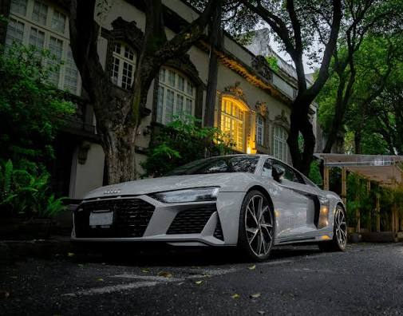

The rest of it.
I am glad to see you visit this page. I believe I am more than the numbers on my transript and I believe everyone should value the arts. Learn about some of them below.
Books
After reading Susanna Clarke's book, Piranesi, my love for reading was rekindled. However, I now chase literature that make the mind work. I want it to invoke thought process and confusion. These are some of my favorite recent reads.
-
Piranesi — Susanna Clarke
It stuck with me because of how it turns isolation and an unfamiliar world into something strangely beautiful and meaningful.
-
A Brief History of Time — Stephen Hawking
It made the scale of the universe feel real to me and pushed me to think more seriously about the physics behind the questions I was already curious about.
-
Animal Farm — George Orwell
It stuck with me because it showed how easily ideals can be reshaped when people stop questioning who has power and why.
Formula 1 Racing
What I love most about Formula 1 is how every part of the sport is connected. The car, driver, engineers, pit crew, strategy, and even tiny aerodynamic decisions can all determine the outcome of a race. It is one of the few sports where engineering and athletic performance are pushed to such an extreme at the same time.
George Russell
A highly technical and consistent driver who combines speed with precision and strong racecraft.
McLaren
Known for extremely fast and coordinated pit stops, where timing and teamwork have to be nearly perfect.
Mercedes
A team with a strong engineering culture and a long history of pushing performance, technology, and efficiency in Formula 1.

Audi R8
The Audi R8 is my favorite car because it combines a naturally aspirated V10, all-wheel drive, high-revving performance, and an extremely lightweight aluminum-intensive construction into a road car that feels heavily influenced by motorsport engineering.
Photography
I have always apreciated the visual arts despite my grave lack of talent in them. However, I have undertaken a mission of creating an album of my high school days to keep their memory alive. Although my camera is old, my skills are new. As I take more pictures, be it at tournaments, events, or day to day occurences, I hope to see myself improve greatly.
Music
"Without music, life would be a mistake" (Twilight of the Idols, Fredrich Nietzsche). However, Spotify can only go so far. On my own I have experimented with the tools below.
-
Flute
-
Piano
-
Harmonica
-
Native American Flute
-
Bugle
-
Recorder
-
Waveform (A Digital Audio Workstation)
Who I'd want in the room
These are people who changed how their whole field thinks by testing and trusting an idea further than anyone else was willing to.
-
David Deutsch
Argued that a quantum computer isn't just a faster computer, it's proof that computation is a law of physics and reality. He also wrote some great books.
-
Paul Dirac
Predicted antimatter straight out of an equation, years before anyone found it. Trusted the math even when it said something that sounded absurd.
-
Scott Aaronson
A complexity theorist who's spent his career explaining why certain problems will always be hard and explained that idea to people outside his field.
-
Umesh Vazirani
Helped found quantum computational complexity as its own field, back when most people hadn't decided quantum computers were worth taking seriously yet.
-
Leslie Lamport
Built the theoretical tools that let you prove a distributed system is actually correct, instead of just hoping it holds up under load.
Through Philosophy, Thought Prospers
- Immanuel Kant — The idea that how you act matters more than what you get out of it has stuck with me since I first read from his works.
- Marcus Aurelius — His stoic take on control and duty feels close to how I think about everything. If you can't do something yet, then work your way up to it.
- Bertrand Russell — I like how he pushed for clear thinking over comfortable answers. In the real world, comfortability is much more so a state of mind than something to strive for.
My Motto
Etiam ferrum menti a manu fictae cedet, roughly "even iron yields to a mind shaped by the hand." The idea is that knowledge doesn't really count until you've built something with it. Theory alone doesn't bend anything, but a mind that's learned by doing can shape even the hardest material.
I realize this is a bit 'about the build' but it is also how I treat all my favorite parts of life. You will find this motto all over the website. Also, Latin is really cool.